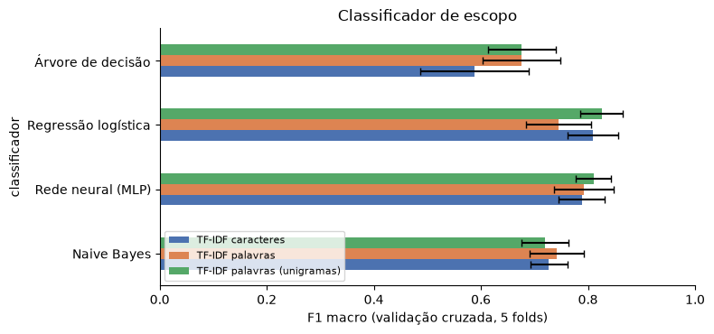
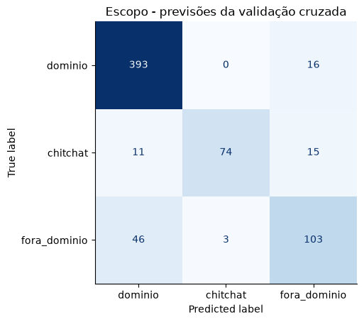
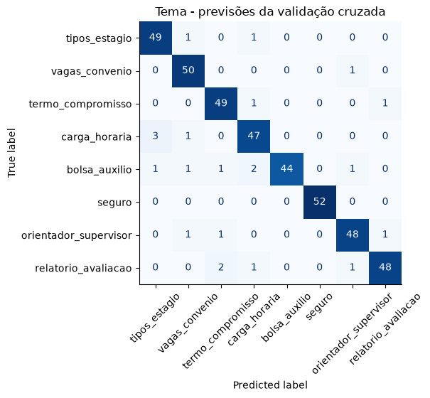
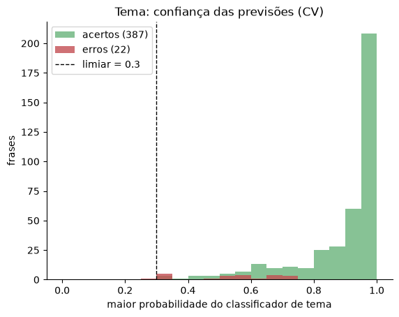

Fernanda Lara de Brittes, Gabriel Moisés Ribeiro Lanzarin, Willian Carneiro Ferreira
Faculdade de Computação (FACOM) – Universidade Federal de Mato Grosso do Sul (UFMS)
Campo Grande – MS – Brasil
Resumo. Este trabalho apresenta o Estagi, um chatbot que responde dúvidas de estudantes de graduação da UFMS sobre estágio. O sistema usa dois classificadores em cascata – um de escopo (domínio, conversa social ou fora do domínio) e um de tema (oito intenções) – orquestrados por um grafo LangGraph, e um LLM que redige a resposta a partir de trechos de documentos oficiais recuperados por TF-IDF (RAG). Comparamos quatro algoritmos em três representações com validação cruzada estratificada, ajustamos hiperparâmetros por busca em grade e escolhemos o limiar de confiança com dados. No conjunto de teste, escrito apenas por pessoas (190 frases), o sistema atingiu F1 macro de 0,853 no escopo, 0,933 no tema e 0,878 de ponta a ponta, com falso aceite de 10% e falsa recusa de 2,5%.
Dúvidas sobre estágio – se é obrigatório, quantas horas se pode cumprir, quem paga o seguro, como prorrogar o termo de compromisso – se repetem a cada semestre e costumam chegar por e-mail às Comissões de Estágio (COE) dos cursos. As regras estão espalhadas entre a Lei nº 11.788/2008 [Brasil 2008], a Resolução nº 706-COGRAD/UFMS/2022 [UFMS 2022] e manuais da Pró-Reitoria de Assuntos Estudantis (Proaes), o que torna difícil para o estudante achar a resposta sozinho.
O grupo construiu o Estagi, um assistente que (i) decide se a mensagem é sobre estágio, conversa social (chitchat) ou outro assunto; (ii) identifica qual das oito intenções do domínio foi perguntada; e (iii) responde com base nos documentos oficiais, citando a fonte. A decisão de rota é feita por classificadores clássicos, treinados e avaliados com protocolo experimental controlado; o LLM só redige o texto final. Os principais resultados são: regressão logística sobre n-gramas de caracteres no escopo (F1 macro de 0,821 na validação cruzada e 0,853 no teste), rede neural MLP no tema (0,945 e 0,933) e um sistema ponta a ponta com 84,7% de acurácia e F1 macro de 0,878 no teste humano.
Classificação de textos. Um chatbot de intenções trata cada mensagem como um problema de classificação supervisionada: dado um texto, prever um rótulo dentre um conjunto fixo [Jurafsky e Martin 2024]. O texto precisa ser convertido em vetor; usamos o TF-IDF, que pondera cada termo pela frequência no documento e pela raridade no corpus [Manning et al. 2008], em duas variantes: palavras (unigramas e bigramas) e n-gramas de caracteres dentro das palavras, mais robustos a erros de digitação, abreviações (“vc”, “tb”) e flexões.
Algoritmos. Comparamos quatro classificadores do scikit-learn [Pedregosa et al. 2011]: Naive Bayes multinomial (probabilístico, assume independência entre termos), árvore de decisão (regras interpretáveis, tende a sobreajustar em espaços esparsos), regressão logística (linear, regularizada pelo parâmetro C) e perceptron multicamadas (MLP) com uma camada oculta, que aprende combinações não lineares dos termos [Russell e Norvig 2021].
Detecção de fora do escopo. Sistemas reais recebem muitas mensagens que não pertencem a nenhuma intenção; tratá-las como uma classe explícita e medir o falso aceite é prática recomendada na literatura [Larson et al. 2019]. Por isso o primeiro estágio separa domínio, chitchat e fora_dominio.
RAG. Na geração aumentada por recuperação [Lewis et al. 2020], o sistema busca trechos relevantes numa base de documentos e os entrega ao modelo de linguagem como contexto, reduzindo respostas inventadas e permitindo citar a fonte. O fluxo do bot é um grafo de estados implementado com LangGraph [LangChain 2025].
Definimos oito intenções a partir da estrutura da Resolução 706-COGRAD: tipos_estagio (obrigatório e não obrigatório, quem pode estagiar), vagas_convenio (vagas, concedentes, convênios e agentes de integração), termo_compromisso (TCE, assinaturas, aditivo, rescisão), carga_horaria (jornada, duração, recesso), bolsa_auxilio (bolsa e auxílio-transporte), seguro (seguro contra acidentes pessoais), orientador_supervisor (orientador, supervisor e COE) e relatorio_avaliacao (relatórios, avaliação e conclusão). Cada intenção tem descrição e resposta fixa no grupo.yaml, usada quando o LLM não está disponível.
O treino combina três origens (Tabela 1):
openai/gpt-6-luna, via OpenRouter, gerou 895 frases: 562 das oito intenções (5 estilos × 14 frases por intenção), 62 de chitchat, 100 de fora do domínio e 171 negativos difíceis, perguntas sobre temas de outros grupos que usam palavras do nosso domínio (“bolsa de monitoria”, “termo de trancamento”, “seguro saúde”, “orientador de TCC”). Todas foram revisadas; 12 foram descartadas (frases cortadas, rótulo ambíguo), com o motivo registrado em dados/descartadas_llm.txt. Todos os prompts estão em dados/prompts_llm.md.O teste tem 190 frases, todas escritas por pessoas (15 por intenção, 30 de chitchat e 40 de fora do domínio), separadas antes de qualquer experimento e sem nenhuma repetição no treino (checado após normalização). Como só obtivemos 133 frases humanas para o treino, e a regra exige no mínimo 20% de frases humanas, mantivemos todas as humanas e usamos uma amostra das artificiais, no mínimo exigido por classe (≥50 por intenção, ≥100 de chitchat, ≥150 de fora do domínio). O treino final tem 661 frases, 20,1% humanas (scripts/montar_treino.py).
| Classe | Humano | LLM | MASSIVE | Treino | Teste |
|---|---|---|---|---|---|
| 8 intenções (cada) | 10–11 | 40–41 | 0 | 50–52 | 15 |
| chitchat | 21 | 51 | 28 | 100 | 30 |
| fora_dominio | 30 | 92 | 30 | 152 | 40 |
| Total | 133 | 470 | 58 | 661 | 190 |
Tabela 1. Composição dos conjuntos de treino e teste por origem.
As frases humanas são mais curtas (7,3 palavras em média, contra 10,8 das do LLM) e mais informais (“vc”, “dnv”, vocativos como “Chat, ...”), o que já sugere que elas serão mais difíceis para o classificador (Seção 6).
A base de conhecimento tem 13 documentos, um ou mais por intenção, com a origem em documentos/FONTES.md: quatro PDFs oficiais da UFMS (Resolução 706-COGRAD, manual de preenchimento do Termo de Compromisso no Portal do Estágio, Instrução Normativa nº 11-Proaes/2021 sobre o seguro e o manual de estágio de um curso do CPAQ) e nove resumos em Markdown, um por intenção e um de perguntas frequentes, redigidos a partir da Lei 11.788 e da Resolução 706. Os documentos são divididos em 140 trechos de até 700 caracteres e indexados por TF-IDF; o bot recupera os 4 trechos mais similares (similaridade mínima de 0,05).
Todo o desenvolvimento usou apenas o treino. A métrica principal é o F1 macro, que dá o mesmo peso a cada classe – importante porque fora do domínio e chitchat têm tamanhos diferentes das intenções. O protocolo foi:
min_df=2 e TF-IDF de caracteres 2–5-gramas), em validação cruzada estratificada de 5 partições (semente 42), para cada estágio.GridSearchCV nos dois melhores algoritmos, com n-gramas de caracteres: regressão logística com C ∈ {0,01; 0,1; 1; 10; 100; 1000} e n-gramas (2,4) ou (2,5); MLP com 32 ou 64 neurônios e α ∈ {10−4; 10−2; 1}. Traçamos a curva de validação de C para verificar sub e sobreajuste.A Figura 1 resume a comparação. Regressão logística e MLP dominaram; a árvore de decisão foi a pior em todas as representações (F1 entre 0,59 e 0,68), sobreajustando o treino (F1 ≈ 1,0 no treino). O melhor resultado bruto foi a regressão logística com unigramas (0,826 ± 0,040), seguida da MLP com unigramas (0,810) e da regressão logística com caracteres (0,809). Na busca em grade, a regressão logística com caracteres (2–5) e C = 100 chegou a 0,821, e a MLP a 0,815. Escolhemos a regressão logística com n-gramas de caracteres e C = 100: tem desempenho equivalente ao melhor (diferença menor que um desvio-padrão), é mais robusta a erros de digitação, comuns nas frases humanas, e fornece probabilidades bem comportadas.


Figura 1. Escopo: F1 macro na validação cruzada por algoritmo e representação (esquerda) e matriz de confusão do modelo escolhido (direita).
A matriz de confusão mostra que o erro dominante é fora do domínio previsto como domínio (46 de 152): é exatamente o efeito dos negativos difíceis. Na validação cruzada, o falso aceite foi de 22,6% e a falsa recusa de 3,9%. A taxa de erro varia com a origem: 10,2% nas frases do LLM, 18,8% nas humanas e 31,0% nas da MASSIVE.
No tema, as diferenças foram menores: Naive Bayes, regressão logística e MLP com caracteres ficaram entre 0,935 e 0,942. Após a busca em grade, a MLP com 64 neurônios e α = 0,01 obteve 0,945, e a regressão logística 0,943; ficamos com a MLP. Os pares mais confundidos (Figura 2) são carga_horaria → tipos_estagio (“Posso estagiar de manhã e estudar à tarde?”), bolsa_auxilio → carga_horaria e relatorio_avaliacao → termo_compromisso (“preciso de assinatura da empresa no relatório?”): perguntas que de fato tocam dois assuntos, ou cuja palavra-chave pertence a outra intenção. seguro foi a intenção mais fácil (F1 = 1,00). Os termos de maior peso de uma regressão logística sobre palavras confirmam que o modelo aprendeu o vocabulário esperado (“bolsa”, “transporte”; “horas”, “recesso”; “tce”, “aditivo”).


Figura 2. Tema: matriz de confusão na validação cruzada (esquerda) e distribuição da confiança de acertos e erros, com o limiar escolhido (direita).
Abaixo do limiar, o bot pergunta “sua dúvida é sobre A ou B?” em vez de responder. Na validação cruzada, os erros do tema já têm confiança alta, então o limiar tem pouco efeito: 0,30 evita 1 erro sem perder acertos (99,8% respondidas direto); 0,35 evitaria 6 erros, mas 3 acertos virariam pergunta; a partir de 0,50, os acertos perdidos superam os erros evitados (0,60: 14 erros evitados contra 22 acertos perdidos). Como na avaliação automática um pedido de esclarecimento conta como erro, adotamos o valor conservador de 0,30.
| Nível | n | Acurácia | F1 macro | F1 macro (CV) |
|---|---|---|---|---|
| Escopo (1º estágio) | 190 | 0,895 | 0,853 | 0,821 |
| Tema (2º estágio, oráculo) | 120 | 0,933 | 0,933 | 0,945 |
| Ponta a ponta (grafo) | 190 | 0,847 | 0,878 | – |
Tabela 2. Avaliação padronizada no teste humano (uma única vez), comparada à validação cruzada.
No teste (Tabela 2), o escopo errou pouco no domínio (117 de 120 corretos), mas recuperou só 25 das 40 mensagens fora do domínio: 10 foram aceitas como domínio e 5 tratadas como chitchat. O falso aceite foi de 10,0%, a falsa recusa de 2,5%, e 4,2% das mensagens receberam pedido de esclarecimento. A latência média de classificação foi de 3,7 ms.
Comparamos a cascata (escopo → tema) com um único classificador de 10 classes (8 intenções + chitchat + fora do domínio), ambos com regressão logística sobre caracteres e sem limiar. Na validação cruzada, o classificador único foi melhor (0,887 ± 0,021 contra 0,853 ± 0,017); no teste, empataram (0,850 contra 0,849). A vantagem do único na validação cruzada vem de ele ver todas as classes ao mesmo tempo, o que ajuda a separar negativos difíceis de intenções específicas; mas ela não se manteve nas frases humanas. A cascata, por sua vez, permite usar um algoritmo próprio em cada estágio (no nosso caso, MLP só no tema), aplicar o limiar apenas entre intenções e analisar separadamente falso aceite e confusão entre temas – o que justificou mantê-la no bot final.
Análise dos erros. No teste, os erros se concentram em três padrões. (i) Assuntos acadêmicos vizinhos: “quais matérias são obrigatórias no meu curso?”, “é obrigatório 75% de presença?” e “preciso escolher um professor orientador para meu TCC” foram aceitos como estágio porque compartilham “obrigatório” e “orientador” com o domínio – são negativos difíceis que nossos próprios negativos do LLM não cobriram. (ii) Vocativo “Chat”: “Chat, me fala uma receita de brownie” e “Chat, meu notebook tá lento” foram classificados como chitchat, porque no treino humano o vocativo aparece quase sempre em conversa social; o modelo aprendeu a palavra, não a intenção. (iii) Pedidos de explicação geral: “Chat, me explique tudo sobre TCE” virou chitchat, e “se mudar meu horário tenho que fazer outro termo?” foi para carga horária – uma pergunta que de fato mistura dois temas. Na demonstração, o bot também recusou “meu termo de compromisso venceu semana passada, ainda dá pra prorrogar?”, uma falsa recusa de uma frase longa e narrativa, estilo pouco presente no treino. Já a pergunta sem resposta nos documentos (“qual o valor da bolsa de monitoria?”) foi tratada corretamente pela persona: o bot disse não ter a informação e indicou a COE, em vez de inventar um valor.
Validação cruzada × teste. O escopo foi melhor no teste (0,853) que na validação cruzada (0,821), e o tema ligeiramente pior (0,933 contra 0,945). A diferença no escopo se explica pela composição: a validação cruzada inclui as frases da MASSIVE, as mais difíceis (31% de erro), que não existem no teste; e o domínio do teste, escrito por estudantes, é bem reconhecido. Com apenas 15 exemplos por intenção, uma frase a mais ou a menos muda o F1 de uma classe em cerca de 3 pontos, então diferenças pequenas não são significativas.
Efeito da origem dos dados. As frases humanas erraram quase o dobro das do LLM na validação cruzada (18,8% contra 10,2%): o LLM escreve frases longas, completas e com vocabulário previsível, enquanto pessoas escrevem “Quanto vou receber?” ou “Estágio benefícios”. Treinar majoritariamente com dados sintéticos superestima o desempenho; a exigência de 20% de dados humanos e de um teste 100% humano foi decisiva para medir o desempenho real. A redução das frases do LLM para atingir 20% também diminuiu o treino de 1374 para 661 frases, o que provavelmente custou alguns pontos de F1 no escopo.
Limitações. O maior problema é o falso aceite de 10%: no tema estágio, responder com segurança algo que não é de estágio pode induzir o estudante ao erro. Os resumos em Markdown foram redigidos a partir das normas e precisam ser mantidos atualizados; regras específicas variam conforme o Projeto Pedagógico de cada curso. A recuperação por TF-IDF falha quando a pergunta usa sinônimos que não aparecem nos documentos. Por fim, o teste é pequeno (190 frases).
Conexões com a disciplina. O trabalho exercitou aprendizado supervisionado, representação de texto, o compromisso entre viés e variância (árvore sobreajustada; curva de validação de C), a separação rigorosa entre treino e teste, e a ideia de agente com estados e decisões explícitas (o grafo), combinando IA simbólica (rotas e regras) com modelos estatísticos e um LLM.
O Estagi mostra que classificadores clássicos, bem avaliados, bastam para decidir a rota de um chatbot de atendimento: o sistema acerta 93% das intenções e 85% das mensagens de ponta a ponta no teste humano, e o LLM com RAG responde citando a fonte e admitindo quando não sabe. Funcionou bem a regressão logística sobre n-gramas de caracteres, robusta à escrita informal; não funcionou tão bem a detecção de fora do domínio para assuntos acadêmicos vizinhos. Como trabalhos futuros, propomos coletar mais frases humanas, sobretudo negativos difíceis acadêmicos; testar embeddings de sentenças nas duas etapas e na recuperação; e calibrar um limiar também no escopo para reduzir o falso aceite.1
1 Vídeo de apresentação: [LINK DO VÍDEO]. Repositório: https://github.com/gabrielmoisesads-sys/Estagio-IA-2026-02-TP-Chatbot
Fernanda Lara de Brittes: formulário, coleta e rotulagem das frases humanas de treino e teste. Gabriel Moisés Ribeiro Lanzarin: definição das intenções, documentos, geração e revisão dos dados do LLM, código e notebook (com apoio do Claude Code, ver abaixo). Willian Carneiro Ferreira: criação do repositório do grupo, revisão e complemento do relatório. Todos participaram da revisão dos resultados e do vídeo.
O grupo usou IA generativa nas etapas abaixo; o registro completo está em USO_DE_IA.md e os prompts de geração de dados em dados/prompts_llm.md. O grupo é responsável por todo o conteúdo entregue.
| Ferramenta | Etapa | O que a IA fez | O que o grupo fez |
|---|---|---|---|
| Claude Code (Claude Opus 5.5) | Planejamento e domínio | Resumiu o enunciado; propôs as 8 intenções e respostas fixas a partir da Res. 706 e da Lei 11.788 | Aprovou a proposta; conferiu as respostas com os artigos citados |
| Claude Code | Documentos | Localizou 4 PDFs oficiais e redigiu 9 resumos em Markdown | Conferiu os resumos com as normas; registrou as fontes |
| OpenRouter, gpt-6-luna | Dados de treino | Gerou 895 frases (intenções, chitchat, fora do domínio e 171 negativos difíceis) | Revisou todas; descartou 12; usou uma amostra de 470 |
| Claude Code | Código | Escreveu os scripts de montagem dos dados e o notebook a partir do exemplo do professor; corrigiu um erro de compatibilidade | Executou, conferiu os números e as escolhas de modelo e limiar |
| OpenRouter, gpt-6-luna | Chatbot | Redige as respostas a partir dos trechos recuperados | Ajustou a persona; testou acertos, erros e perguntas sem resposta |
| Claude Code | Artigo | Redigiu a primeira versão deste artigo a partir dos resultados do notebook | Revisou o texto, os números e a análise |
Não foram feitas com IA: as frases de origem humana do treino e do teste, a rotulagem das respostas do formulário e o vídeo.
Brasil (2008). Lei nº 11.788, de 25 de setembro de 2008. Dispõe sobre o estágio de estudantes. Diário Oficial da União.
FitzGerald, J. et al. (2023). MASSIVE: A 1M-example multilingual natural language understanding dataset with 51 typologically-diverse languages. In Proceedings of ACL 2023, p. 4277–4302.
Jurafsky, D. e Martin, J. H. (2024). Speech and Language Processing. 3ª ed. (rascunho). Stanford University.
LangChain (2025). LangGraph documentation. https://langchain-ai.github.io/langgraph/.
Larson, S. et al. (2019). An evaluation dataset for intent classification and out-of-scope prediction. In Proceedings of EMNLP-IJCNLP 2019, p. 1311–1316.
Lewis, P. et al. (2020). Retrieval-augmented generation for knowledge-intensive NLP tasks. In Advances in Neural Information Processing Systems 33, p. 9459–9474.
Manning, C. D., Raghavan, P. e Schütze, H. (2008). Introduction to Information Retrieval. Cambridge University Press.
Pedregosa, F. et al. (2011). Scikit-learn: Machine learning in Python. Journal of Machine Learning Research, 12:2825–2830.
Russell, S. e Norvig, P. (2021). Artificial Intelligence: A Modern Approach. 4ª ed. Pearson.
UFMS (2022). Resolução nº 706-COGRAD/UFMS, de 2022. Regulamento de estágio dos cursos de graduação da UFMS.